In 2023, technology was rapidly advancing. The country experienced significant developments, particularly in urbanization.
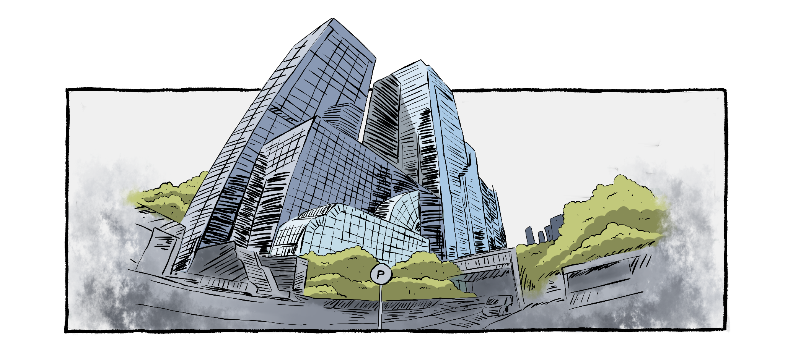The efforts aim to promote economic growth and development. However, amids these positive changes,
it shifted the focus away from agriculture resulting in limited exposure.
As the years went by,
the land became exhausted and the crops struggled to grow.
The population expansion rate in the Philippines was estimated to be 1.4 percent in 2019. In contrast, the agriculture sector only experienced minimal growth of 0.5 percent in late 2020. The imbalance between food production and the rapid growth of population is visible.
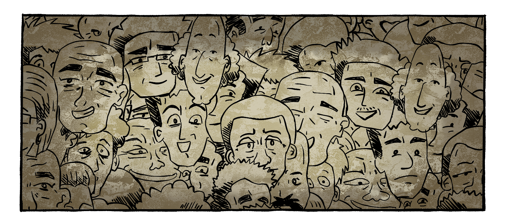The average age of Filipino farmers has now reached 53-57 years old.
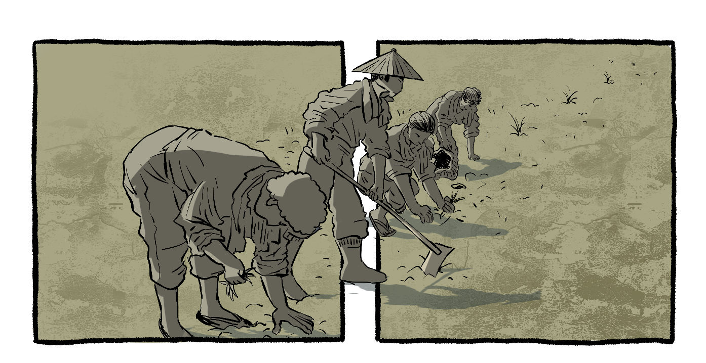Unfortunately, in your period of time, many individuals are more interested in pursuits other than agriculture.
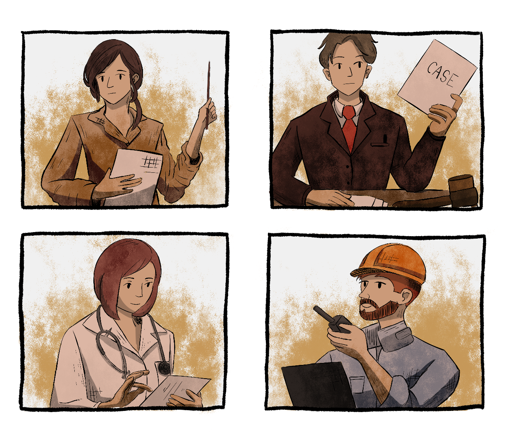

But there is good news. The use of sustainable farming practices in agriculture has been reportedly increasing.
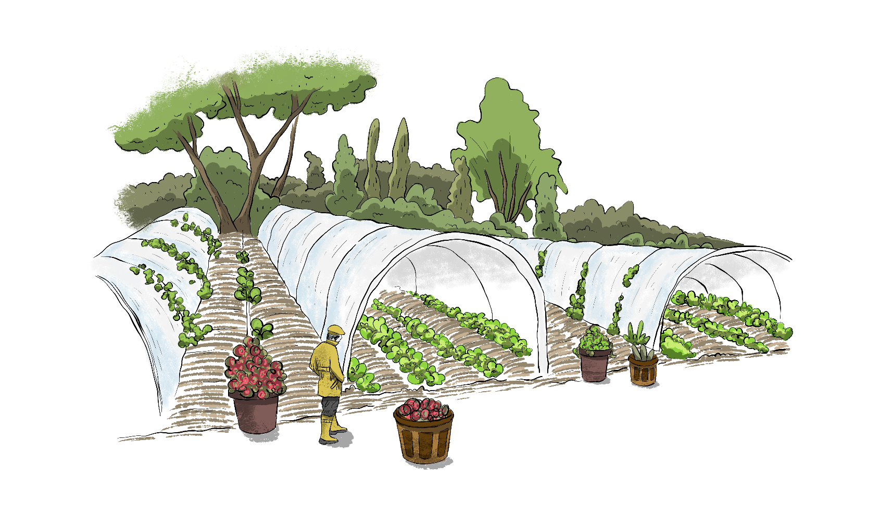They aim to improve the effeciency, productivity, sustainability, and overall performance of agricultural practives.
Agriculture sectors have already adapted to modernization to which some of their practices do not necessarily require a labor-intensive process
 
 
 
Note that vertical farming is not a complete replacement for traditional farming. Though it offers numerous benefits, including efficient space utilization, reduced resource consumption, and year-round cultivation that can address urban and resource scarcity challenges, it's not a complete replacement due to factors like cost, energy consumption, crop suitability, and the importance of maintaining diverse agricultural practices. A combination of both approaches can contribute to a sustainable and resilient food production system. For more info: https://www.fao.org/land-water/overview/covid19/homegardens/en/
Organic farming is a method of agriculture that focuses on growing crops and raising livestock in ways that prioritize environmental sustainability, animal welfare, and human health. It avoids the use of synthetic chemicals, genetically modified organisms (GMOs), and synthetic pesticides or fertilizers. Instead, organic farming relies on natural processes and materials to nurture the soil, plants, and animals. Farmers avoid using synthetic chemicals such as pesticides, which are like bug-killing sprays, and synthetic fertilizers, which are like plant food. Instead, they use natural alternatives that are safer for the environment and us. Just like how healthy plants need good soil to grow, organic farming focuses on keeping the soil in tip-top shape. Farmers use things like compost (rotted food and plant material) to make the soil rich in nutrients. Organic farms are like little ecosystems where many different plants and creatures live together. This helps keep a balance so that pests don't take over, and friendly insects help with things like pollination (when bees help flowers turn into fruits). Organic farming isn't just about plants; it's about animals too. Organic livestock (like chickens, cows, and pigs) are treated well, with access to fresh air and open space. They're given organic feed without synthetic stuff. Organic farming doesn't use genetically modified organisms (GMOs), which are plants or animals that scientists have changed in a lab. Instead, it sticks to natural breeds and varieties. Organic farmers work in harmony with nature. They pay attention to what's happening in the environment and use methods that don't harm it. This can mean things like rotating crops and using friendly insects to keep pests away. Because organic crops grow slowly and naturally, they often end up being tastier and more nutritious. For more info: https://www.fao.org/organicag/oa-faq/oa-faq1/en
Regenerative farming is an approach to agriculture that goes beyond just sustaining the land – it aims to actively improve it. It's like giving back to the Earth while growing food. Regenerative agriculture encompasses holistic farming systems that offer numerous benefits, including the improvement of water and air quality, the enhancement of ecosystem biodiversity, the production of nutrient-rich food, and the storage of carbon to contribute to mitigating the effects of climate change. Regenerative farming focuses on healing and enhancing the soil. Healthy soil means better nutrient-rich food. Farmers use techniques like cover cropping, composting, and reduced tilling to keep the soil in tip- top shape. Regenerative farms welcome a variety of plants and creatures. This mix helps keep pests in check naturally and supports a balanced ecosystem Just like in organic farming, chemicals like synthetic pesticides and fertilizers aren't used. Instead, natural methods keep pests away and feed the soil. Thisfarming aims to use resources wisely. Water is conserved, and energy-efficient practices are adopted to reduce the farm's environmental footprint. Regenerative farming helps fight climate change. Certain practices, like cover crops and reduced tilling, can pull carbon dioxide from the air and store it in the soil. Animals are often a part of regenerative farms. They help with things like pest control and soil health. These animals are treated well, with space to roam and natural diets. Regenerative farming often emphasizes producing food for the local community. This reduces the need for long transportation and supports local economies. The goal is to create a farm that thrives for generations. The practices used should enhance the land rather than deplete it over time. For more info: https://www.cbf.org/issues/agriculture/regenerative-agriculture.html

Agriculture is not just a traditional method anymore. Infact, you can turn it into a small business.
Even without enough capital, one can turn their ideas into reality through the help of Young Farmers Challenge.
There are remarkable young farmers who achieved remarkable success in their food production business. They serve as outstanding inspirations in revitalizing and safeguarding the agricultural industry from declining.
Read the story of every successful young farmer who ventured into sustainable food production business. May these stories inspire you to start your own.
Agriculture is not just important in addressing food security and world hunger but it also plays a significant role in conserving and sustaining the environment.
The modern farming practices mentioned earlier has a great impact in preserving the environment as it lessens the use of hazardous chemicals.
It promotes biodiversity, water conservation, and habitat preservation.

Without agriculture, the consequences would severly imapct nearly every aspect of human civilization and the environment just like how this phenomenon damaged everything around us.
Carry the SEEDS of CHANGE within you. As a young individual, you still have the chance to change and save everything. Go back to the present and spread the knowledge far and wide.